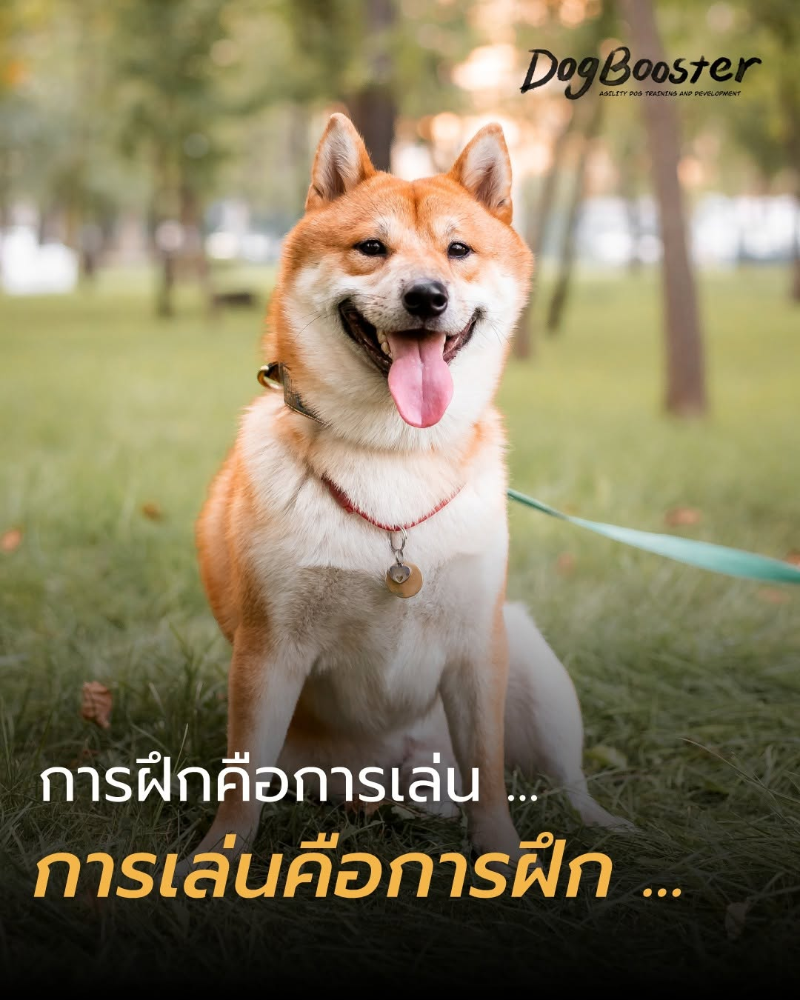

การฝึกสุนัขไม่ใช่การออกคำสั่งให้เขา “จำยอม” แต่คือการทำให้เขารู้สึกว่า “การเลือกทำพฤติกรรมที่ดีนั้นมีค่าสำหรับเขาที่สุด”
เมื่อเราใช้การเสริมแรงทางบวก (Positive Reinforcement) อย่างมีขั้นตอน สุนัขจะเรียนรู้ว่าการนั่ง การรอ หรือการเดินข้างเรา ไม่ใช่เพราะเขากลัวโดนดุ แต่เพราะเขารู้ว่า “ทำแล้วคุ้ม” ความรู้สึกดี ๆ เหล่านี้จะถูกสะสมจนกลายเป็นแรงจูงใจจากภายใน
ในโลกของ Force-free หากสุนัขทำไม่ได้ เราจะไม่ลงโทษ แต่เราจะกลับมาดูว่า “ขั้นตอน” ของเรายากไปไหม? เราสร้างคุณค่าให้พฤติกรรมนั้นมากพอหรือยัง? วิธีนี้ช่วยรักษาความมั่นใจของสุนัขไว้ได้อย่างเต็มเปี่ยม
นิสัยไม่ได้เกิดจากการทำตามคำสั่งเพียงครั้งคราว แต่นิสัยคือ “สิ่งที่ทำโดยอัตโนมัติ” เมื่อสุนัขได้รับคุณค่าจากการทำสิ่งดี ๆ ซ้ำแล้วซ้ำเล่า พฤติกรรมเหล่านั้นจะกลายเป็นตัวตนใหม่ของเขา เป็นสุนัขที่คิดเป็น เลือกเป็น และอยากร่วมมือกับเราด้วยความสุข
หัวใจสำคัญคือ “ขั้นตอน” ที่ชัดเจน เริ่มจากจุดเล็ก ๆ ที่เขาทำสำเร็จได้ง่าย แล้วค่อย ๆ เพิ่มความท้าทาย โดยมีเราเป็น “ผู้สนับสนุน” ไม่ใช่ “ผู้คุมกฎ”
การสร้างสายสัมพันธ์ที่แน่นแฟ้นผ่านความเข้าใจ ไม่เพียงแต่จะได้สุนัขที่เชื่อฟัง แต่คุณจะได้คู่หูที่ไว้วางใจคุณสุดหัวใจ ซึ่งนั่นคือรางวัลที่มีค่าที่สุดของการเป็นเจ้าของสุนัข